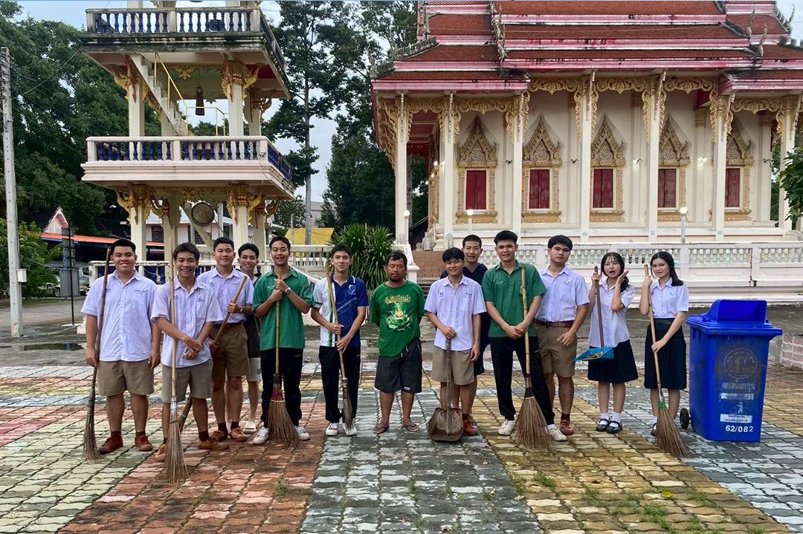

รวมผลงานกิจกรรมจิตอาสาพัฒนาสังคม


บริจาคเลือด

ผมได้ไปบริจาคเลือดที่โรงบาลเพชรบูรณ์กับเพื่อนๆอีก2คน เป็นครั้งแรกในชีวิตเลยครับผมตื่นเต้นมากส่วนตัวผมเป็นคนกลัวเข็มสะด้วย เหตุผลที่ผมอยากมาบริจาคเลือดเพราะว่าผมเห็นคลิปใน tiktok เกี่ยวกับการบริจาคเลือดผมรู้สึกว่ามันช่วยคนที่กำลังลำบากได้เยอะเลยอยากเป็นส่วนหนึ่งที่ได้ช่วยเหลือคน ผมหวาดเสียวมากโคตรๆเลยครับตอนเข็มแทง แต่พอเอาจริงๆก็เหมือนมดกัดผมกะไว้ว่าในอนาคตถ้าผมว่างๆผมก็จะไปบริจาคอีก
จิตอาสาโบกจราจร
กิจกรรมนี้เป็นกิจกรรมของนักศึกษาวิชาทหาร หรือ รด. นะครับเขาให้หาคนอาสา8 นายเพื่อไปโบกรถที่โรงเรียนอนุบาลเพชรบูรณ์ทุกตอนเย็นผมกับเพื่อนอีก1คนก็เลยได้อาสาไปโบกรถ สิ่งที่อยากจะบอกก็คือเด็กประถมดื้อมากกก
เปิดหมวกเล่นดนตรี ร่วมบริจาคให้สุนัขจรจัด

คือผมเป็นคนที่ชอบเล่นดนตรีกับเพื่อนๆอยู่แล้ว จนมีไอเดียกันว่าจะไปเปิดหมวกบริจาคให้สุนัข(ส่วนตัวผมเป็นคนชอบหมามาก ทาสหมา) ผมรวมกลุ่มกับเพื่อนๆเพื่อจัดเตรียมอุปกรณ์และสถานที่ ผมจัดกิจกรรมที่ ถนนคนเดินเพชรบูรณ์จะมีทุกๆวันศุกร์ ซึ่งผมได้เปิดหมวกครั้งแรกในชีวิตบอกตรงๆว่าผมตื่นเต้นมากๆ ตอนแรกผมคิดว่าพวกเราจะได้กันไม่น่าจะถึง 1000บาทแต่กปรากฏว่าได้มา 3000บาทผมนี่แทบจะอึ้งได้โคตรเยอะเลยครับ ส่วนการบริจาคให้น้องหมาจะต่อจากกิจกรรมนี้นะครับ มีภาคต่อ
บริจาคอาหารให้สุนัข(น้องหมา)

หลังจากที่ได้เงินมา3000บาทจากการเปิดหมวกหมวก พวกผมได้นำเงินไปซื้ออาหารให้น้องหมาและนำไปบริจาคให้ศูนย์หมาจรที่ Kumon ตอนแรกพวกผมกะจะกลับแล้วแต่คุณน้าได้พาพวกผมไปให้อาหารหมาที่คอกและยังให้สุนัขระหว่างทางที่เจอตามถนนอีกด้วย ระหว่างทางน้องหมาเยอะมากๆจนผมได้ไปเห็นคอกหมา มีสุนัขประมาณ30ตัวได้เลยครับอาหารหมดไวมากๆ รู้สึกว่าที่พวกผมซื้อไปนี้หมดไวมากๆเลยคิดว่าแล้วคุณน้าต้องเสียเงินเลี้ยงน้องหมาขนาดไหน ถ้ามีโอกาสหน้าผมคิดว่าจะบริจาคอีกรอบครับ
กิจกรรมกวาดลานวัด
ผมกับเพื่อนได้มีไอเดียอยากกวาดลานวัดพวกผมอยากทำตัวให้มีประโยชน์เลยตัดสินใจกันไปกลาดวัดกิจกรรมนี้ไม่มีอะไรมากครับ แต่วัดนี้ไม้กวาดน้อยมาก